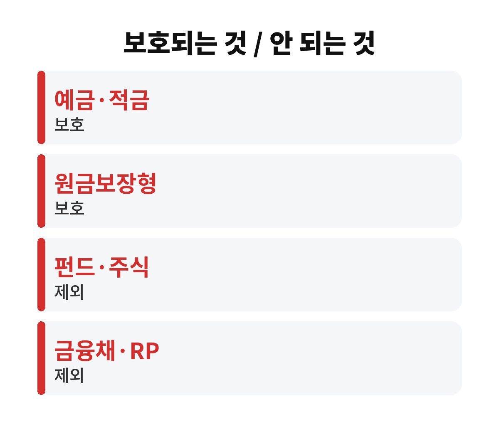

예금자보호 한도는 한 금융회사당 1인 기준으로 원금과 이자를 합쳐 1억원까지다. 그 금액을 넘는 부분은 금융회사가 문제를 겪을 때 돌려받지 못할 수 있다.
예금을 한 은행에 몰아 둔 분이라면 내 돈이 정말 다 보호되는지 지금 바로 따져 볼 만하다.
예전에는 5천만원이었는데 2025년 9월부터 1억원으로 올랐다. 20년 넘게 묶여 있던 한도가 두 배가 된 셈이다. 그래서 예금자보호 한도 이야기를 하면 "이제 1억까지는 안전하다"는 말부터 나온다. 맞는 말이다. 다만 조건이 붙는다.
첫째, 금융회사별로 계산한다. A은행에 1억, B은행에 1억을 넣어 뒀다면 각각 보호받는다. 둘째, 원금과 이자를 합친 금액이 기준이다. 원금이 딱 1억인 분은 이자가 붙는 순간 한도를 살짝 넘게 된다. 셋째, 같은 은행이면 지점이 달라도 한 곳으로 합쳐서 본다. 강남 지점에 5천만원, 부산 지점에 6천만원이라면 한 은행에 1억1천만원이 있는 걸로 센다.

여기서 많이 헷갈리신다. 은행 창구에서 가입했다고 다 보호되는 건 아니거든요. 일반적으로 예금, 적금, 원금보장형 퇴직연금 같은 상품은 보호 대상이다. 반대로 펀드, 주식, 금융채, RP 같은 투자성 상품은 은행에서 팔았어도 보호 대상이 아니다.
상품마다 다를 수 있으니 가입 서류나 금융회사 앱에서 "예금자보호 대상 여부"를 꼭 확인해 보자. 또 저축은행, 새마을금고, 농협·수협 단위조합처럼 보호 방식이 조금씩 다른 곳도 있어서 내가 거래하는 곳의 안내를 한 번 읽어 두면 안심이 된다.
방법은 단순하다. 금융회사별 합계를 먼저 적어 보는 것이다. 종이 한 장이면 충분하다. 은행 이름, 예금과 적금 잔액, 예상 이자를 한 줄씩 쓰고 더해 보자. 한 곳이 1억원 근처거나 넘는다면 일부를 다른 금융회사로 옮기는 걸 고민할 때다.
이때 금리만 보고 움직이면 안 된다. 만기 전에 해지하면 약속된 금리를 못 받는 경우가 많다. 그래서 새로 가입하는 예금부터 나눠 담거나, 만기가 돌아오는 시점에 옮기는 게 손해가 적다. 월급통장과 생활비통장까지 한 곳에 몰려 있다면 그 잔액도 함께 합산해야 한다. 의외로 여기서 한도를 넘기는 분이 많다.
한 가지 더. 예금보험공사에는 내 보호 금액을 조회해 볼 수 있는 서비스가 있다. 거래하는 금융회사에 내 돈이 얼마나 보호되는지 직접 확인하면 계산이 틀릴 걱정이 줄어든다. 특히 만기 예금을 재예치하는 시기, 퇴직금이나 보험금처럼 목돈이 한꺼번에 들어온 시기에는 한 곳에 잔액이 갑자기 불어나기 쉽다. 그럴 때 일주일만 시간을 들여 분산해 두면 마음이 훨씬 편하다. 금리 0.1%포인트를 쫓는 것보다 큰돈을 지키는 습관이 길게 보면 더 큰 이익이 되는 경우가 많다.
| 구분 | 핵심 포인트 |
| 보호 한도 | 1인당·금융회사별 원금+이자 1억원 |
| 보호 대상 | 예금·적금·원금보장형 상품 등 |
| 제외 대상 | 펀드·주식·금융채·RP 등 투자성 상품 |
가장 흔한 실수는 가족 명의를 헷갈리는 것이다. 한도는 명의자 1인 기준이라서 부부가 각자 1억씩이면 따로 보호받는다. 반대로 내 통장에 있지만 실제 소유자가 다르게 되어 있으면 계산이 달라질 수 있다. 또 해외 금융 상품이나 증권사 계좌에 맡긴 돈은 보호 방식이 다르니 구분해서 봐야 한다.
마지막으로 자주 놓치는 부분이 있다. 한도 1억원은 원금과 이자를 합친 금액이라서, 만기 때 이자가 붙으면 계산이 달라질 수 있다. 예를 들어 원금을 9천만원 넣어 둔 분도 이자가 쌓이면 한도에 가까워진다. 그러니 한도 바로 아래까지 채우기보다 여유를 조금 남겨 두는 편이 안전하다. 가족끼리 돈을 모아 한 사람 명의로 크게 예치하는 일도 한 번 돌아보면 좋다. 명의를 나누면 보호받는 금액도 나뉘기 때문이다.
사실 예금자보호제도가 작동하는 일은 흔치 않다. 그래도 큰돈일수록 "혹시"에 대비하는 비용은 작고, 안 했을 때 손해는 크다. 오늘 앱을 열어 은행별 잔액만 더해 봐도 충분하다. 여러분은 한 곳에 몇 퍼센트나 몰려 있는지 알고 계셨나요? 댓글로 나눠 주세요. 도움이 되셨다면 구독도 부탁드려요.
※ 본 글은 일반적인 정보 제공이며 투자 권유가 아닙니다. 제도·한도는 변경될 수 있으니 금융회사나 예금보험공사에서 확인하세요.